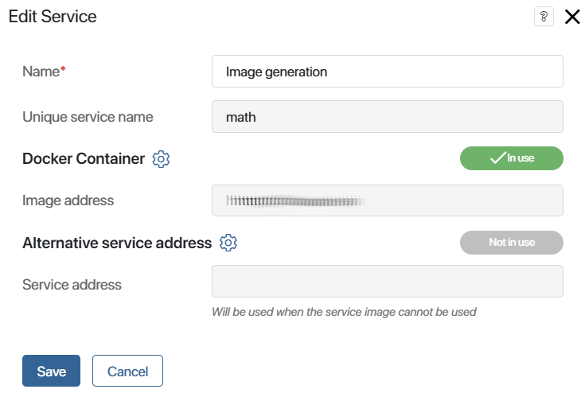

When the Low-code platform cannot provide the functionality needed for efficient integration of processes into the existing information landscape, it is recommended to create custom microservices. These services can be used in a variety of ways and for the most demanding business needs.
When installing a service independently of the BRIX platform and supporting it separately, the end developer and administrator may face difficulties in installing and operating the solution.
To simplify and speed up the development of your own microservices, you can create a portable service inside a custom module.
The connection method of the portable service is selected depending on the required functionality of its execution and on the BRIX edition used:
- The service can be a Docker container. It is installed in a separate space in the Kubernetes environment. The method is available in On-Premises and SaaS Enterprise editions.
- The service runs on a third-party website with a public access address. In this case, you can only make requests to the service. This method is available for all versions, but it is used mainly in SaaS Standard.
Features of adding services to modules
Services and containers that can be installed in a module have a number of special properties and limitations:
- On-Premises and SaaS Enterprise editions support specifying a container URL. In this case, the Docker service image is not part of the module. This means that you have to store the image of your service in a public or private Docker Hub repository before adding it. Moreover, the service image is not included in the .e365 package when the module is exported, so it cannot be transferred into another company. For the moment, when a ready-to-use module with services is installed, the system needs to have access to the specified repository URL to download the Docker image.
- In order for a module with a portable service to be used in the SaaS Standard edition, an alternative service address should be specified. This means that you should ensure the work of the service on a third-party website with a public access address.
- If the On-Premises and SaaS Enterprise editions include both microservice connection options in the module settings, the image address is predominantly used to set up communication. Connection via an alternative address is used when the connection is disconnected.
- By default, the portable services have no resource limitations.
- In the BRIX On‑Premises and SaaS Enterprise editions, you can set microservice deployment parameters using ConfigMap. For example, limit resource consumption, configure autoscaling of the service, etc.
- Interaction with the portable service is only available from the module’s server scripts (widgets, processes, business process activities, API methods, event handlers) and only with HTTP requests. But the service itself can interact with any external service by any communication channels and protocols.
Additional information about portable services can be found in the following articles:
- Configure a portable service in a module. Create a service in a custom module.
- Enable portable services. Enable portable services in BRIX Enterprise.
- Guidelines for developing microservices for portable services. Develop your own microservice.
- Configure parameters of portable services using ConfigMap. Configure additional microservice deployment parameters using ConfigMap.
Use case of portable service configuration
Suppose you want to use one of your solutions to generate and display mathematical formulas. Users are proficient in the LaTeX markup language. In the solution, it is necessary to implement the generation of images from LaTeX formulas.
To do this, let’s create a module and connect the portable service. To use this module in all BRIX versions, we will configure two ways to connect the service via:
- Microservice image address in the On‑Premises and SaaS Enterprise editions.
- Alternative service address in the SaaS Standard edition.
Configure the service image address in On-Premises and SaaS Enterprise
In the On‑Premises and SaaS Enterprise editions, you can download and install the service as a Docker container. To configure how the service loads when the module is enabled, add the image address.
For example, let’s take a ready-made container with the service of image generation by formula. You can build this container yourself from source code and place it in your private repository or use a ready-made one from the public Docker Hub repository.
To configure the service connection, follow these steps:
- Create a custom module and click the Services tab.
- Add a new service and specify:
- Service name.
- Image address indicating the path to the repository. Depending on the location of the Docker image, you can specify short or full address.
- Authentication data if login and token are required to access the repository with the Docker image of the service.
- The port for communication with the microservice.
- After saving the parameters, the Edit Service window will open. Here you can specify connection settings, such as additional ports and the number of microservice instances. To do this, click the gear icon next to the Docker Container option.
 - Save the settings.
Now with the module enabled, you can use the service and access it in scripts.
Configure an alternative service address in SaaS Standard
This method of configuration assumes that the service is pre-installed on an external hosting with public access. When configuring the service, an alternative address is specified in the module to send requests to the third-party resource where the service is running.
This method is available in all BRIX editions, but it is mostly used in SaaS Standard because in this version you cannot download the service using the image address.
To configure the service connection via an alternative address, follow the steps below:
- Create a custom module and click the Services tab.
- Add a service and fill in its name in the window that opens.
- Then enter the address of the third-party website where the service is configured. It can be specified as a string or you can use the address template.
In this example, the following template is used: {$protocol}{$base_math_url}. For this purpose, two parameters are created in the module settings:
- Service address protocol (
protocol). This field specifies the data transfer protocol, for example, https://. - Service address name (
base_math_url). This field specifies the path to the resource where the portable service is located, for example, example.mathcalculation.com.

- Save the settings.
Now with the module enabled, you can use the service and access it in scripts.
Use the service in a widget
Now you can use the service you created in a server script of a widget to generate images. Images can be generated with the GET /render HTTP method, as specified in the service’s description.
In the widget, the user specifies a formula in a field of the String type and the desired width of the image in a field of the Number type.
Here is an example of a script you can write to use the service:
async function renderImage(): Promise<void> {
let source = encodeURIComponent(Context.data.formula!);
let width = encodeURIComponent((Context.data.image_width || 400).toString());
let imgResp = await Namespace.services.math.fetch(`/render?input=latex&inline=1&output=png&source=${source}&width=${width}`, {
headers: {
"Accept" : "image/png"
}
});
let buff = await imgResp.arrayBuffer();
Context.data.formula_image = await Context.fields.formula_image.create(`render-${Date.now()}.png`, buff);
}
In this example, Namespace.services.math is used to access the service. This allows calling HTTP methods of the service in TS SDK server scripts. The relative address of the method is specified for the invocation, the rest is implemented by BRIX capabilities.
In the script itself, a method of the service is called. In the response an image is given in the buffer. It should be saved as a file and specified in a variable of the Files type.
The rendered image will look like this:
Found a typo? Select it and press Ctrl+Enter to send us feedback